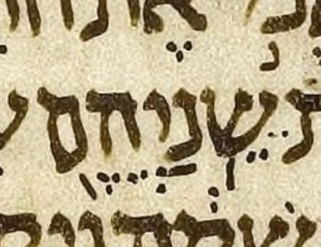
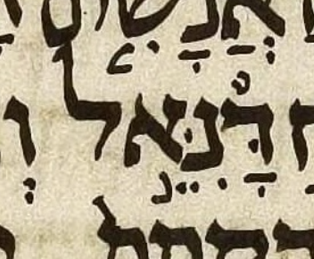

Avi’s lists and near-Aleppo ketiv pointing
State: live investigation. The 2 Kings 18:27, Ezekiel 14:14 and 14:20, and Ezekiel 28:3 manuscript readings are settled; the Introduction corrections and the Ecclesiastes comparison remain open.
The Introduction needs corrections at 2 Kings 18:27 and Ezekiel 14:14, 14:20 and 28:3. Ben supplied manuscript crops confirming the absent shin dot, the present nun dagesh, and the absent meteg. Near-Aleppo now also has Ben’s corrected dalet-carrier representation at all three Ezekiel Daniel sites. The Leningrad case concerns vowel placement and dagesh where Aleppo is missing.
These comparisons establish what Avi’s introduction, MAM’s chapter notes, and the stored near-Aleppo data say. On 2026-10-13, Ben supplied an Aleppo crop and a confident manuscript reading for 2 Kings 18:27. On the same day he supplied a crop confirming no meteg at Ezekiel 28:3, and two crops confirming dagesh in nun at Ezekiel 14:14 and 14:20. The Ecclesiastes case still has no manuscript-image reading recorded in this investigation. The Ecclesiastes comparison below remains an analytical proposal; the Ezekiel carrier correction is implemented.
Sources and Hebrew notation
Avi directed Ben to the הניקוד בתוך הכתיב subsections of the introduction’s lists.
The local chapter 5 mirror records revision 3087740, with source timestamp
2026-10-08T17:34:00Z. The chapter 4 mirror records revision 3087756,
with source timestamp 2026-10-08T18:06:50Z.
The mirror manifest supplies these identities;
the mirror README explains their scope.
The Hebrew forms in this report use MAM-normal mark order. The source mirrors retain their captured bytes. Reordering a display copy does not add, remove, or relocate a mark between letters.
In near-Aleppo’s displayed notation, guillemets identify artificial carriers: «אֵ» represents tsere without an additional written ketiv consonant. The carrier’s alef is not part of the ketiv spelling. The October 13 Ezekiel decision supersedes the earlier tsere-only alef carriers; its implemented forms are shown below.
Source links identify both the local files and the exact baseline passages in Git. The baseline links remain evidence for this investigation if the maintained files later change.
1. 2 Kings 18:27: shin dot
Disposition: retain near-Aleppo’s current form without a shin dot. Ben’s confident Aleppo reading rejects the earlier proposed addition. Correct the Introduction list instead.
MAM’s ketiv letters are שניהם. The complete pointed qere is מֵימֵ֥י רַגְלֵיהֶ֖ם. This is a special ketiv/qere pair whose qere comprises two atoms. Near-Aleppo’s reviewed pointing preserves the orphan tsere positions with artificial carriers.
| Pointed form | Site | Reading | Detail |
|---|---|---|---|
| ֵשֵׁ֥נַיְֵהֶ֖ם | 2 Kings 18:27 | Introduction list | Shin has a shin dot. The initial and medial tsere are shown as the source encodes them. |
| «אֵ»שֵ֥נַיְ«אֵ»הֶ֖ם | 2 Kings 18:27 | Current near-Aleppo | Shin has no shin dot. |
| «אֵ»שֵׁ֥נַיְ«אֵ»הֶ֖ם | 2 Kings 18:27 | Earlier proposal, rejected | Adding a shin dot would contradict the supplied Aleppo reading. |
What the chapter note says
The note supplies two Aleppo ketiv representations, both without a shin dot:
The note describes the initial tsere dots as compressed into the narrow space between the atoms. Near-Aleppo’s stored form follows the note’s absence of a shin dot; the missing dot is not a consequence of its carrier notation.
Ben’s manuscript reading, 2026-10-13
Ben reports: “I see no evidence of any kind of dot, shin dot or otherwise, on top of the shin, and the manuscript (Aleppo) is well preserved here, so I feel confident in this result.” The supplied crop supports this observation: no dot is visible above shin.


The correction belongs in the Introduction
The correction is filed as MAM-basics issue 305, created by Codex on 2026-10-13 at Ben’s request, with his reading and the committed screenshot as evidence.
Remove the shin dot from the Introduction’s listed ketiv form, leaving its other marks intact. MAM’s chapter note and near-Aleppo already omit the dot and agree with Ben’s observation. This investigation records the proposed Wikisource correction; it does not edit the live Introduction or its local mirror.
Ben had suspected that the euphemistic ketiv/qere might combine pointing for a hypothetical “pronounced ketiv” with pointing for the qere. The absent shin dot removes the evidence that prompted that suspicion at this site. Ben knows of no other candidate for that suspected combination. This is his assessment of the known candidate, rather than a completed survey establishing absence throughout the corpus.
A recollection of pointed ketiv without qere
Two transcription candidates are identified; the Leningrad images remain unverified. Ben initially recalled a ketiv without qere, possibly עם, with hiriq under ayin. Later on 2026-10-13, he clarified: “It might have been אם (alef) not עם. Also the xiriq might be in Leningrad not Aleppo.” The recollection remains separate from the settled Aleppo shin-dot observation.
| Transcribed ketiv | Site | Source | Detail |
|---|---|---|---|
| אִם־ | 2 Samuel 13:33 | UXLC 2.5 capture | A ketiv element with hiriq under alef and no qere element. |
| אִם־ | 2 Samuel 15:21 | UXLC 2.5 capture | The first אם after כי; a ketiv element with hiriq under alef and no qere element. |
The local UXLC Samuel 2 capture encodes both as
<k>אִם־</k>, at lines 6600 and 7766 respectively.
Its XML header identifies the edition as UXLC 2.5, dated 1 Apr 2026.
WLC 4.22 has the same pointed string at these two sites in
1verses_04_2s1k.json,
keys 2s13:33 and 2s15:21, but includes it as ordinary verse text rather than a ketiv/qere pair.
These are observations about the transcriptions, not independent confirmation of the manuscript marks.
The other two אם ketiv-without-qere sites checked, Jeremiah 39:12 and Ruth 3:12, are unpointed in the local UXLC capture. No Leningrad image reading has yet selected which Samuel site Ben recalls.
- Introduction: chapter 5, line 430; local mirror.
- Chapter note: preserved MAM clause; local dataset.
- Stored pointing: record
BD-2Kings:18:27:1; local reviewed pointings.
2. Ezekiel 28:3: meteg under dalet
Disposition: remove the meteg from the Introduction list. Ben confirmed its absence in the supplied Aleppo crop on 2026-10-13. Near-Aleppo already omits it.
The Introduction lists מִדָּֽנִֵּ֑אל, with meteg beneath dalet. MAM’s chapter-note form מִדָּנִֵּ֑אל has no meteg. The supplied crop supports Ben’s reading: no meteg is visible beside dalet’s qamats.

The Wikisource correction remains to be made. The correction is filed as MAM-basics issue 306, with the section link, listed form and crop. This investigation supplies the technical context. The separate carrier correction below preserves the absence of meteg.
- Introduction: chapter 5, line 495, under ספר יחזקאל and הניקוד בתוך הכתיב.
- Source and current pointing: Ezekiel dataset, verse 28:3.
3. The three Ezekiel Daniel ketiv encodings
Disposition: add nun’s missing dagesh to the Introduction’s entries for Ezekiel 14:14 and 14:20. Ben’s supplied Aleppo crops settle the dagesh question at both sites.
The carrier representation was corrected at Ben’s request on 2026-10-13. Nun now has hiriq alone, matching the qere nun. Dagesh, tsere and accent are on a medial dalet carrier.
Ben specified that nun’s cluster should be exactly as in the qere, and the carrier cluster should be the “dalet version” of the qere yod’s cluster. He then explicitly instructed: “Apply the correction now”. The two Ezekiel 14 sites have munaḥ; Ezekiel 28:3 has atnaḥ.
| Pointed form | Site | Reading | Detail |
|---|---|---|---|
| דָּנִֵ֣אל | Ezekiel 14:14 | Introduction list | Source display copy; no nun dagesh in the listed form. |
| דָּנִּ֣«אֵ»אל | Ezekiel 14:14 | October 8 representation, superseded | Dagesh and accent remained on nun; tsere had an alef carrier. |
| דָּנִ«דֵּ֣»אל | Ezekiel 14:14 | Corrected near-Aleppo | Nun matches the qere nun; dalet carries the absent qere yod’s complete marks. |
| דָּנִיֵּ֣אל | Ezekiel 14:14 | Unchanged MAM qere | The qere supplies the comparison clusters. |
| דָּנִֵ֣אל | Ezekiel 14:20 | Introduction list | Source display copy; no nun dagesh in the listed form. |
| דָּנִּ֣«אֵ»אל | Ezekiel 14:20 | October 8 representation, superseded | Dagesh and accent remained on nun; tsere had an alef carrier. |
| דָּנִ«דֵּ֣»אל | Ezekiel 14:20 | Corrected near-Aleppo | Nun matches the qere nun; dalet carries the absent qere yod’s complete marks. |
| דָּנִיֵּ֣אל | Ezekiel 14:20 | Unchanged MAM qere | The qere supplies the comparison clusters. |
| מִדָּֽנִֵּ֑אל | Ezekiel 28:3 | Introduction list | Source display copy; the listed meteg at 28:3 needs correction. |
| מִדָּנִּ֑«אֵ»אל | Ezekiel 28:3 | October 8 representation, superseded | Dagesh and accent remained on nun; tsere had an alef carrier. |
| מִדָּנִ«דֵּ֑»אל | Ezekiel 28:3 | Corrected near-Aleppo | Nun matches the qere nun; dalet carries the absent qere yod’s complete marks. |
| מִדָּנִיֵּ֑אל | Ezekiel 28:3 | Unchanged MAM qere | The qere supplies the comparison clusters. |
Ben’s manuscript reading, 2026-10-13
Ben reports that the Aleppo manuscript images resolve the question in favor of dagesh in nun at Ezekiel 14:14 and 14:20. Both supplied crops show the dot inside nun. MAM’s chapter notes explicitly describe nun as having dagesh; the Introduction’s two listed forms omit it.
Ezekiel 14:14: dagesh is visible inside nun.


Ezekiel 14:20: dagesh is visible inside nun.

The crop mapping follows the munaḥ placement described in MAM’s notes: beneath nun at 14:14, and displaced beneath alef at 14:20.
The correction belongs in the Introduction
Add dagesh to nun in both entries under הניקוד בתוך הכתיב in chapter 5, ספר יחזקאל, leaving the other marks intact. This investigation records the requested correction; it does not edit Wikisource or the local mirror.
The dagesh correction at Ezekiel 14:14 and 14:20 is recorded here for filing as one MAM-basics issue.
Where the superseded form came from
MAM’s chapter notes quote דָּנִֵּ֣אל at 14:14 and 14:20, and מִדָּנִֵּ֑אל at 28:3. The first two notes explicitly describe “the dotted nun”; 14:20 additionally describes munaḥ as pushed beneath alef. These quoted source strings supplied the nun dagesh and accent in the old representation.
The public choice log, doc_choices.py,
passage “Orphan vowels at five reviewed ketiv sites”, records the October 8 decision to move only tsere
onto a medial alef carrier. The October 13 choice, “The Daniel ketiv carriers at Ezekiel 14:14, 14:20 and 28:3”,
supersedes that representation. The old implementation entered the public repository in
commit d8f83381.
The implemented carrier contract
The dataset uses ניקוד בלי אות ובלי רווח with only parameter 1. Its GD payloads now include exactly DALET + DAGESH + TSERE + MUNAH and DALET + DAGESH + TSERE + ETNAHTA, alongside the existing MAHAPAKH payload for Isaiah 54:16. GA and GV still prohibit dagesh. The written ketiv consonants and complete qere are preserved.
The three reviewed-note targets have been refreshed and reviewed for this decision. Their original MAM clauses retain every source form and qualification as MAM context. The carrier decision governs near-Aleppo’s encoding. The crops above independently establish nun’s manuscript dagesh at Ezekiel 14:14 and 14:20; the Ezekiel 28:3 crop settles the meteg question.
- Named implementation:
phase5_readings.py, searchable passage_REVIEWED_ORPHAN_VALUES. - Closed carrier dispatch:
orphan_marks.py,GD_MUNAH_CARRIERandGD_ATNAH_CARRIER. - Preserved MAM source clauses and reviewed targets:
doc-note-review.json, the three named Ezekiel notes.
4. Ecclesiastes 9:4: vowel placement and dagesh
Disposition: an editorial review remains possible; no replacement is adopted. Aleppo is missing here, and the exact Leningrad form in Avi’s list is itself qualified by MAM’s chapter note.
MAM’s ketiv letters are יבחר; its pointed qere is יְחֻבַּ֔ר. Near-Aleppo’s current pointed ketiv comes from the frozen MAM-derived pointing set, rather than an Aleppo reading quoted in a note.
| Pointed form | Site | Reading | Detail |
|---|---|---|---|
| יְחֻבַּ֔ר | Ecclesiastes 9:4 | MAM qere | Qubuts on ḥet; dagesh and pataḥ on bet. |
| יְבַּחֻ֔ר | Ecclesiastes 9:4 | Current near-Aleppo ketiv | The same consonants retain those vowel and dagesh assignments despite their exchanged positions. |
| יְבֻחָ֔ר | Ecclesiastes 9:4 | Listed Leningrad ketiv | Qubuts on bet; doubtful qamats on ḥet; no bet dagesh in the quoted form. |
| יְבֻחַ֔ר | Ecclesiastes 9:4 | Analytical comparison | The reported Leningrad arrangement with pataḥ substituted for the doubtful qamats, following the note’s preferred reading. Not an adopted form. |
The qamats reading is doubtful in the source
The introduction labels the form ל-כתיב?!=יְבֻחָ֔ר and asks whether ḥet has qamats. MAM’s chapter note attributes the doubtful qamats to Breuer, then reports that inspection of an enlarged image favors pataḥ, despite blur beneath the horizontal stroke, perhaps a trace of erasure. The note says Dotan also reads pataḥ.
The analytical comparison above makes that reported preference visible. It does not assert a new manuscript reading from this investigation, and it does not establish an Aleppo form.
Three questions must be distinguished
- Vowel placement: current near-Aleppo keeps pataḥ on bet and qubuts on ḥet. The reported Leningrad arrangement has qubuts on the second written letter, bet, and the other vowel on the third written letter, ḥet.
- Vowel identity: the list’s qamats is doubtful; the chapter note favors pataḥ. Adopting the arrangement does not require adopting the doubtful qamats.
- Dagesh: current near-Aleppo retains the qere bet’s dagesh. The quoted Leningrad ketiv form has no bet dagesh. A change of vowel placement would not, by itself, decide whether that dot should be retained.
What would justify a near-Aleppo edit
Near-Aleppo aims for an inferred Masoretic consensus where Aleppo is missing. A reported Leningrad peculiarity is consequently a comparison, not an automatic replacement policy. The useful question is whether independent pointed-ketiv readings support the Leningrad arrangement over the current inferred arrangement.
The note’s agreeing clause names Sassoon 1053, the Cambridge manuscript, printed editions, Koren, Breuer, and Miqraot Gedolot Haketer alongside MAM’s qere presentation. That agreement does not, by itself, supply each manuscript’s pointed ketiv. A broader source comparison should establish the vowel positions and bet dagesh explicitly before an editorial choice is made.
- Introduction: chapter 4, line 586; local mirror.
- Current pointing and qualified source reading: Ecclesiastes dataset passage; local dataset.
- Stored inference: record
E4-Ecclesiastes:9:4:0; local frozen pointings.
Investigation status
The Introduction corrections are supported by the supplied manuscript crops. The shin-dot correction is filed as MAM-basics issue 305; the meteg correction is filed as MAM-basics issue 306. The dagesh correction at Ezekiel 14:14 and 14:20 is recorded above. The three Ezekiel carrier encodings are corrected at Ben’s request. Ecclesiastes 9:4 remains an editorial comparison where Aleppo is missing.
The chapter 5 mirror and MAM chapter notes remain faithful source records. Near-Aleppo’s corrected dataset and example pages implement the new carrier representation.